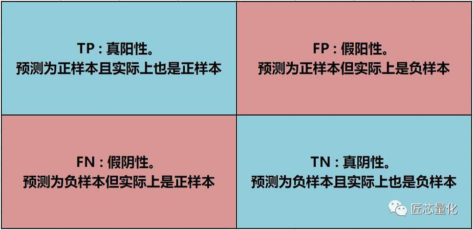
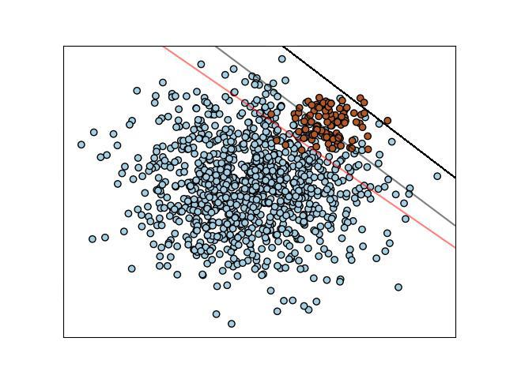
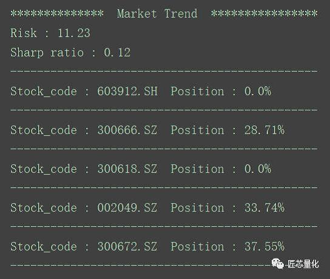
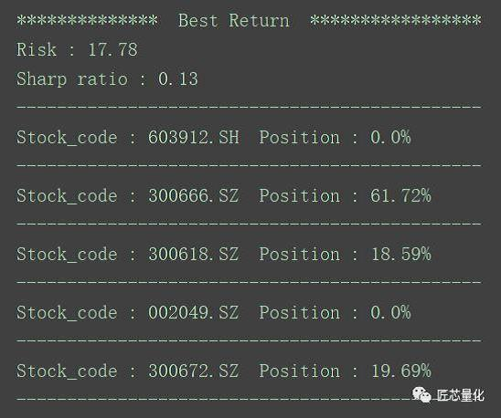

作者：Tushare社区用户
在上一篇中，我们介绍了简单的数据收集，数据预处理与建模案例，本篇承接上篇内容，主要介绍两部分：模型评估，仓位管理。
在机器学习领域，有诸多评估模型的方法和指标，本篇介绍一个最简单常用的指标——F1分值。
要计算模型的F1分值，就要了解混淆矩阵。但在介绍混淆矩阵之前，我们先从实际场景出发，去理解模型评估的思路。
当我们想设计一个模型评估的指标时，一个朴素的想法就是准确率，即模型正确预测的数量，Acc = T（正确预测的次数）/ N（总预测次数）。但在实际的场景中，我们关注的往往是单边的预测准确率，比如在上篇的数据建模里，想要盈利，我们最关心的是预测股价上涨的概率，而预测不上涨的概率则不那么重要；那么公式就需要稍微修改一下：Acc = Tp（预测为上涨且预测正确的次数）/ N（总预测次数）。这个公式虽然能描述正样本的预测准确率，但却有个致命缺陷——当模型把所有样本都预测为正样本时，该公式的准确率是100%！反映在实际场景中，就是无脑买多，这显然是不合理的。究其根本，问题出在公式的分母中，由于无论如何预测，分母都是不变的，那么显然把所有样本点都预测为正得到的准确率最大。为此，我们还需要修改公式，而且是从分母入手，可以有两种方案：
这两个公式没有好坏优劣之分，而是通过不同的角度来对模型进行评价。
现在，我们再来看混淆矩阵就非常简单了：

上面的两个公式，实际上是有区分的，第一个公式计算得到的值叫精度（也叫查准率），反映的是预测能力。第二个公式计算得到的值叫召回率（也叫查全率），反映的是对正样本的拟合能力。
下面我们结合一个实际的场景来解释这个混淆矩阵（图片来自sklearn官档，略作修改，侵删）：

样本背景：在过去n个交易日中（即图中圆点个数），个股股价相较于前一交易日，涨的话是红色点，不涨是蓝色点。横纵坐标分别是个股的两个自定义的状态（比如上篇中的收盘价和成交量）。
现在我们有一个最简单粗暴的分类预测器——画线，而且是直线。
用第一个公式计算的话，Precision = 图中直线右上的所有红点个数 / 图中直线右上所有（红点 + 蓝点）的个数。显然图中红灰黑三条直线中，黑线的Precision最高，高达100%，但在所有红点中占比很小，反映在实际场景中，即遇到机会非常少，实用性下降。
再看第二个公式，Recall= 图中直线右上的所有红点个数 / 图中所有红点个数。显然图中红灰黑三条直线中，红线的Recall最大，接近100%，但同时也会有许多误判（红线右上的蓝点都被预测成了红点），反映在实际场景中，即遇到的机会增大，但误判的概率也变大了。
回到这个场景和图片本身，一个真正好的分类预测模型，应该是类似图中灰色直线的效果，在Precision和Recall之间取一个平衡，在两者间取加权平均值的话就是F1分值：
F1 = ( 2 * Precision * Recall ) / ( Precision + Recall )
图中红灰黑三条直线的F1分值，灰色线的F1最高，而红线由于Precision较低，黑线由于Recall较低，F1分值不会太高。
接下来，我们通过代码来实现计算F1分值并评估模型，在实践中，我们不仅记录F1分值，同时还记录Precision和Recall以及负样本的Precision，综合这几个指标可以粗略判断出模型的状态，过拟合或欠拟合，从而为优化指出方向。
代码的实现需要用到数据库操作，主要用到两张表，一张是结果表，用于记录模型的F1分值等。另一张是中间表，用于存储F1计算过程的一些变量，功能上与内存相似。
结果表——库名：stock 表名：model_ev_resu
| 字段名 | 字段类型 | 字段说明 |
|---|---|---|
| state_dt | varchar2(45) | 评估日期 |
| stock_code | varchar2(45) | 股票代码 |
| acc | decimal(20, 4) | 查准率 |
| recall | decimal(20, 4) | 查全率 |
| f1 | decimal(20, 4) | f1分值 |
| acc_neg | decimal(20, 4) | 查准率（负样本） |
| bz | varchar2(45) | 用于标注模型类别，比如svm、决策树等 |
| predict | varchar2(45) | 对评估日后一个交易日的预测值 |
中间表——库名：stock 表名：model_ev_mid
| 字段名 | 字段类型 | 字段说明 |
|---|---|---|
| state_dt | varchar2(45) | 回测日期 |
| stock_code | varchar2(45) | 股票代码 |
| resu_predict | decimal(20, 2) | 预测值 |
| resu_real | decimal(20, 2) | 真实值 |
在数据库内建好两张表，就可以对模型进行评估了，本篇代码用的是推进式建模（即每天获得最新的股票数据后添加到训练集中，重新建模并对第二天进行预测），部分代码如下：
# 计算查全率
sql_resu_recall_son = "select count(*) from model_ev_mid a where a.resu_real is not null and a.resu_predict = 1 and a.resu_real = 1"
cursor.execute(sql_resu_recall_son)
recall_son = cursor.fetchall()[0][0]
sql_resu_recall_mon = "select count(*) from model_ev_mid a where a.resu_real is not null and a.resu_real = 1"
cursor.execute(sql_resu_recall_mon)
recall_mon = cursor.fetchall()[0][0]
recall = recall_son / recall_mon
# 计算查准率
sql_resu_acc_son = "select count(*) from model_ev_mid a where a.resu_real is not null and a.resu_predict = 1 and a.resu_real = 1"
cursor.execute(sql_resu_acc_son)
acc_son = cursor.fetchall()[0][0]
sql_resu_acc_mon = "select count(*) from model_ev_mid a where a.resu_real is not null and a.resu_predict = 1"
cursor.execute(sql_resu_acc_mon)
acc_mon = cursor.fetchall()[0][0]
if acc_mon == 0:
acc = recall = acc_neg = f1 = 0
else:
acc = acc_son / acc_mon
基本的实现思路是：
（完整的模型评估代码详见 Model_Evaluate.py 文件）
在投资领域，交易择时和风险控制是同等重要的两大模块。前述机器学习的模型解决了交易择时的问题，而马科维茨投资组合理论，则是在投资组合确定的条件下，通过仓位配比来实现风险控制的强大工具。
我们取下面5只股票作为一套投资组合
| 股票代码 | 名称 | 行业 |
|---|---|---|
| 603912 | 佳力图 | 通用设备/5G/次新股 |
| 300666 | 江丰电子 | 半导体/芯片/次新股 |
| 300618 | 寒锐钴业 | 有色金属/锂电池 |
| 002049 | 紫光国芯 | 半导体/5G/两融股 |
| 300672 | 国科微 | 半导体/芯片/次新股 |
现在我们计算一下2018年1月1日的风险系数和其对应的头寸比例，采样长度90天。
计算的过程非常简单，步骤如下：
在求解特征值和特征向量后，我们能得到若干（不大于n）个特征值和其对应的特征向量。这些特征值就是马科维茨理论中的投资组合的风险，其对应的特征向量做归一化处理后就是投资组合中各个股票或基金的头寸比例。
注意，特征向量中会有负值，一起归一化后是作为卖空账户的保证金头寸比例的，鉴于A股融券市场的高门槛和扭曲，不建议做空操作。号主是将特征向量中的负值剔除，将剩余的做归一化处理。
由于特征值和特征向量有多组，显然我们倾向于选风险小的，也即特征值最小的，这代表着市场的方向。本篇的这套portfolio运算后的风险和头寸如下：

市场的方向往往也是大盘的方向，投资组合的收益围绕大盘小范围波动。对于激进型投资者来说，需要一个风险稍稍提高但收益带来明显提升的方案。对于这种需求，则是取次最小的特征值和特征向量，剔除负值并归一化，如下图：

（完整的模型评估代码详见 Portfolio.py 文件）
可见，两套头寸配比差异较大，那么这两套方案的实际表现如何呢，请关注下期内容：
请关注下期内容【机器量化分析（三）——模拟交易与回测】